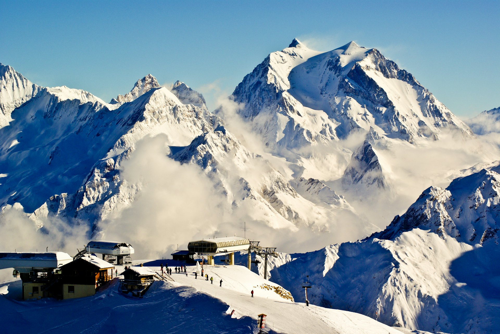

Prix des forfaits de ski 2026-2027 : le comparatif des stations
De 44 € à Isola 2000 à 84,20 € dans les 3 Vallées : le prix d’une journée de ski varie du simple au double selon la station.
Photo : Piotr Figlarz / Unsplash
Voici le prix de la journée de ski pour un adulte en pleine saison, dans les stations de notre guide, de la moins chère à la plus chère. Les tarifs ont été relevés en novembre 2026 sur les grilles publiées par les stations pour l’hiver 2026-2027. Chaque nom renvoie vers notre guide de la station, avec les tarifs enfants, les forfaits 6 jours et l’accès.
Le comparatif, de la moins chère à la plus chère
| Station | Domaine | Journée adulte | Ouverture |
|---|---|---|---|
| Isola 2000 Alpes du Sud | Isola 2000 | 44 € | 3 déc. |
| Auron Alpes du Sud | Auron | 44 € | 5 déc. |
| Avoriaz Haute-Savoie | Avoriaz | 44,50 € | 11 déc. |
| Cauterets Pyrénées | Cirque du Lys | 46 € | 27 nov. |
| SuperDévoluy Alpes du Sud | Dévoluy | 46 € | 12 déc. |
| Font-Romeu Pyrénées | Pyrénées 2000 | 49,50 € | 4 déc. |
| Peyragudes Pyrénées | Peyragudes | 51 € | 12 déc. |
| Saint-Lary Pyrénées | Saint-Lary | 54,70 € | 4 déc. |
| Grand Tourmalet Pyrénées | Barèges-La Mongie | 55 € | 5 déc. |
| Châtel Haute-Savoie | Espace Liberté | 55 € en ligne | — |
| Montgenèvre Hautes-Alpes | Montgenèvre | 56 € | 28 nov. |
| La Clusaz Haute-Savoie | La Clusaz-Manigod | 56,50 € | 12 déc. |
| Megève Haute-Savoie | Évasion Mont-Blanc | 65 € | 19 déc. |
| Les 2 Alpes Isère | Les 2 Alpes | 68 € | 28 nov. |
| La Grave Hautes-Alpes | Téléphériques de la Meije | 68 € | 19 déc. |
| Tignes Savoie | Tignes seul | 70 € | 21 nov. |
| Val d’Isère Savoie | Val d’Isère seul | 70 € | 28 nov. |
| Les Menuires Savoie | Menuires-Saint-Martin | 70 € | 5 déc. |
| Les Arcs Savoie | Pass Classique | 71 € | 12 déc. |
| La Plagne Savoie | La Plagne | 72 € | 12 déc. |
| Val Thorens Savoie | Val Thorens-Orelle | 73,50 € | 21 nov. |
| Chamonix Haute-Savoie | Chamonix Le Pass | 76,50 € | fin nov. |
| Tignes-Val d’Isère Savoie | Tignes-Val d’Isère | 78 € | 28 nov. |
| Courchevel, Méribel Savoie | 3 Vallées | 84,20 € | 4-5 déc. |
Prix de la journée adulte en haute saison, à la caisse sauf mention contraire. Tarifs relevés le 16 novembre 2026 ; ils peuvent changer en cours de saison.
Comment payer son forfait moins cher
- Acheter en ligne à l’avance : à Chamonix, la journée démarre à 49 € en ligne au lieu de 76,50 € ; à Cauterets, certaines journées sont jusqu’à 40 % moins chères en ligne.
- Skier le samedi : c’est le jour des départs, donc des réductions. Dans les 3 Vallées, la journée est à -20 % le samedi en ligne ; à Châtel, elle descend à 44 € ; aux Menuires, à 41 €.
- Venir en début ou en fin de saison : 52 € à Megève au lieu de 65 €, 54,50 € aux 2 Alpes au lieu de 68 €, 66,10 € à Val Thorens au lieu de 73,50 €.
- Prendre une carte de station : au Grand Tourmalet, la carte No Souci fait descendre la journée à 38,50 € hors vacances.
- Commencer sur les pistes débutants : à Isola 2000, le forfait du front de neige est gratuit.
Les Pyrénées, moins chères que les Alpes
Les cinq stations des Pyrénées du comparatif sont toutes entre 46 € et 55 € la journée. Dans les Alpes, il faut aller dans les petites stations ou dans les Alpes du Sud, comme Isola 2000, Auron ou le Dévoluy, pour trouver ces prix. Les grandes stations de Savoie dépassent 70 €.
Les grands domaines reliés
Les forfaits qui ouvrent plusieurs stations sont les plus chers : 84,20 € pour les 3 Vallées (Courchevel, Méribel, Les Menuires, Val Thorens), 78 € pour Tignes-Val d’Isère, 78 € pour Paradiski (La Plagne et Les Arcs) et 69 € pour les Portes du Soleil depuis Avoriaz ou Châtel. Si vous skiez peu, le forfait d’une seule station suffit souvent.
Les stations les moins chères


Activités à réserver
Cours de ski, sorties en raquettes ou excursion au mont Blanc : quelques activités à réserver pour votre séjour.
-
Cours de ski et activités dans les Alpes
Moniteurs, sorties hors-piste et raquettes.
-
Excursions au mont Blanc
Aiguille du Midi et Mer de Glace au départ de Chamonix ou Genève.
Liens partenaires.
Questions fréquentes
Quelle est la station de ski la moins chère en 2026-2027 ?
Dans notre comparatif, Isola 2000 et Auron, à 44 € la journée adulte, puis Avoriaz à 44,50 € sur son seul domaine. Dans les Pyrénées, Cauterets est à 46 €.
Combien coûte un forfait aux 3 Vallées en 2026-2027 ?
84,20 € la journée adulte en haute saison, 75,70 € en début et en fin de saison, et 421 € les 6 jours.
Le forfait est-il gratuit pour les enfants ?
Dans la plupart des grandes stations, le forfait est gratuit avant 5 ans, par exemple aux Arcs, à La Plagne et aux Menuires ; à Tignes et Val d’Isère, il est gratuit avant 8 ans.